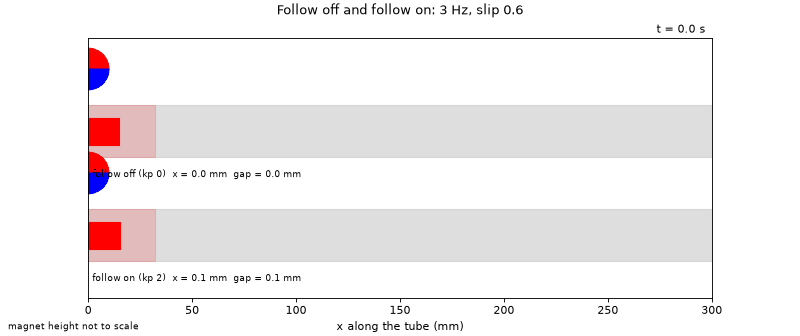
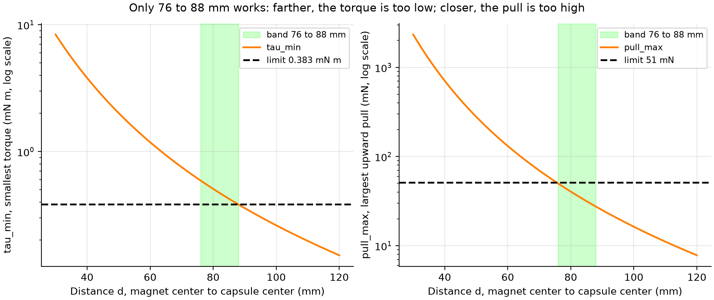
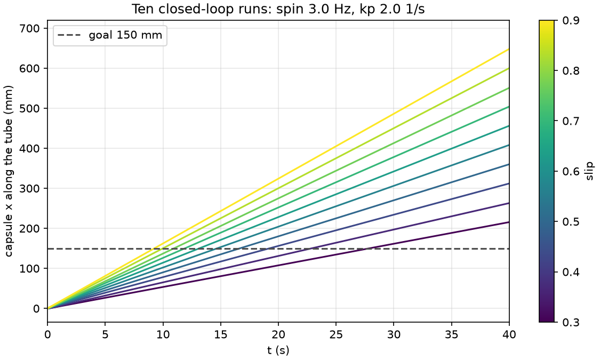
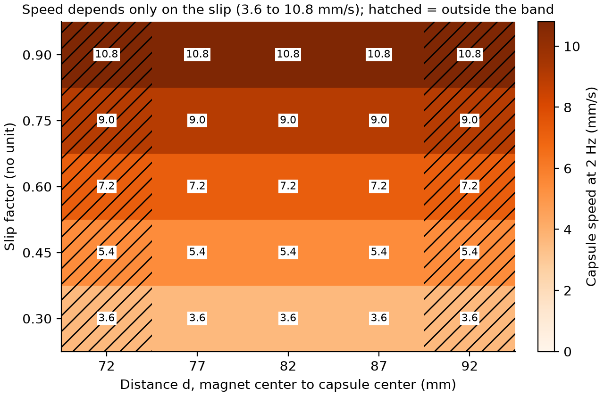
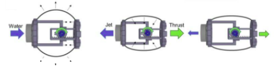
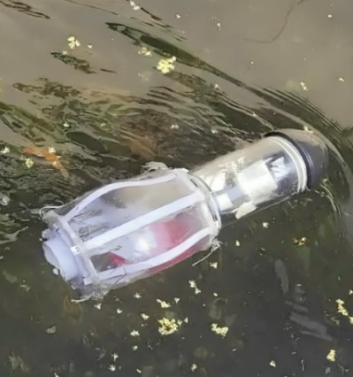

Projects
Magnetically Driven Screw Capsule in a Colon Phantom
A 6-DOF robot arm holds a permanent magnet above a soft tube that stands in for the colon. When the magnet spins, its rotating field turns a small capsule (about 13 mm × 30 mm) that carries a magnet and a spiral thread. The thread pushes on the tube wall, so the rotation becomes forward motion. A camera estimate of the capsule tells the arm where to move the magnet next.
I built the system step by step, simulation first. A Python model library computes the magnet field with Magpylib, checks a point-dipole approximation against it, and gives the torque and the pull on the capsule against distance, plus a screw-speed model with slip. On top of it, a ROS 2 package runs the closed loop: a magnet mover, a capsule simulator with a stall rule, a noisy camera, a smoothing filter and a proportional follow controller, with RViz2 views, CSV logs and replay animations.
A six-joint arm model (URDF) holds the magnet. I wrote the forward kinematics and a damped least-squares inverse kinematics that puts the magnet center on its target and aligns the magnet's spin axis with the tube, leaving the spin itself free. An arm node solves it for every magnet pose inside the closed loop. The full system runs from one launch file, and I recorded it as a ROS 2 bag and replayed it in RViz2.
- The model finds an operating band of 76–88 mm between the magnet and the capsule. In this band the turning torque has a 5× safety margin and the upward pull stays below a set limit.
- With the follow controller off, the capsule outruns the magnet's reach and stalls after 32 mm. With it on, the capsule travels 237 mm in a 22 s run. The magnet trails by 6.4 mm on average (7.5 mm at most), close to the 6.2 mm that the P-controller lag and the filter delay predict.
- In 10 simulated runs with different camera noise and screw slip (0.3 to 0.9), all 10 passed the 15 cm goal; the shortest run travelled 228 mm.
- The arm reaches all 31 points of a 300 mm straight path and of a quarter circle of 150 mm radius. With the arm in the loop, the capsule travelled 208 mm, the largest inverse-kinematics position error stayed below 0.01 mm, and no solution was rejected.
- A sensitivity study shows that a 10 mm height error changes the upward pull by +70% or −37% and moves the magnet out of the band, while the slip changes only the speed (3.6 to 10.8 mm/s at 2 Hz). So the arm must hold the height closely, and the slip must be measured on the real capsule.




I also drafted the method section of the report. A script generates every number in it from the result files, and a second script checks that the text uses only those numbers. Next come the hardware steps: a Hall-sensor check of the field model, measurements of the assumed values (magnet strength, capsule mass, friction, slip), camera tracking, the arm path, and runs in the phantom. This is a feasibility study in a phantom. It makes no clinical claims, and the simulation leaves out friction changes, tube bends and camera dropouts, so I expect fewer successes on the real robot.
Cephalopod-Inspired Soft-Bodied Underwater Robot
A swimming robot that deforms its body instead of using a rigid linkage. A compliant mantle of flexible ribs under a VHB 4905 elastomeric skin changes its volume each cycle. Pulsed-jet propulsion with the added-mass effect drives it, and the nozzle is sized for a stroke ratio near L/D ≈ 4 so the jet rolls up into one vortex ring.
A slip-gear mechanism drives contraction, and passive elastic re-expansion refills the mantle. A non-backdrivable worm-gear motor holds position without continuous current. The result was a working untethered prototype with repeatable cyclic jet propulsion.


Shell-and-Thermosyphon Heat Exchanger for Nuclear Process Heat
A pressure-controlled heat exchanger with nine SS-304 thermosyphons and a dual-shell evaporator and condenser, built for dynamic process-heat extraction. I developed a thermal-resistance-network model in Python with CoolProp, coupling boiling, condensation and forced-convection correlations. The prototype was leak-free at 300 psi in hydraulic testing.